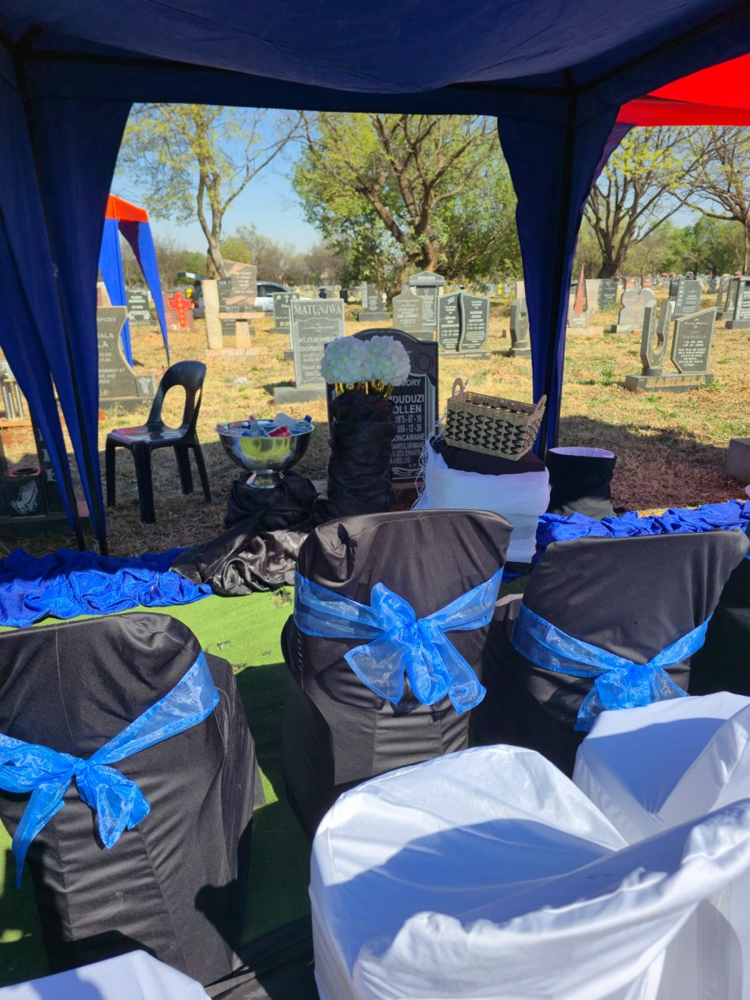
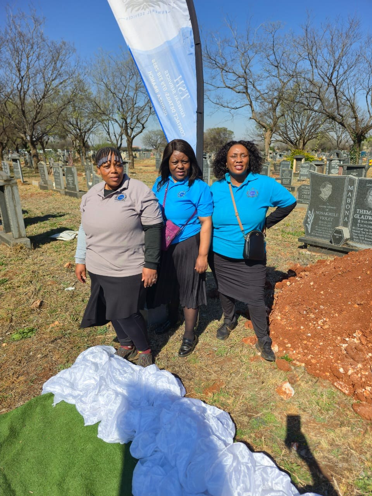
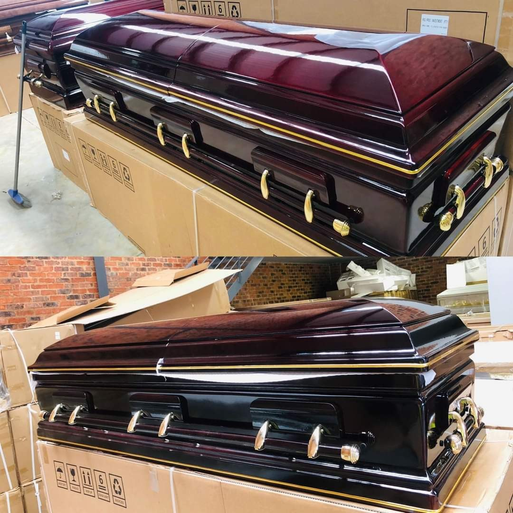
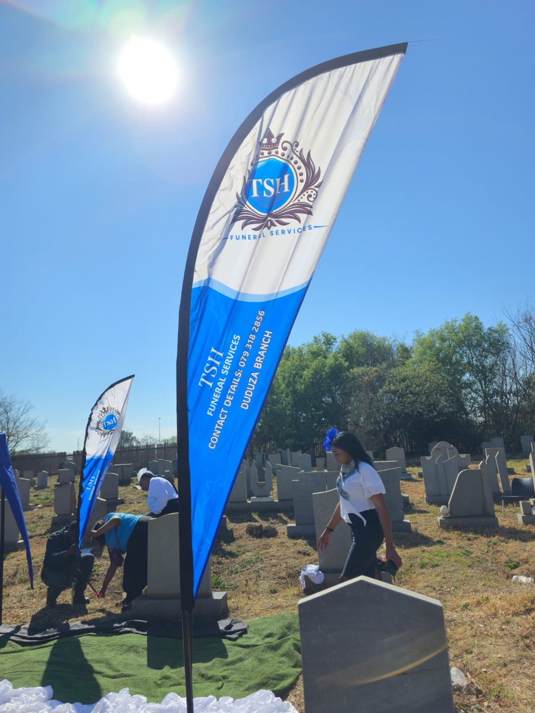
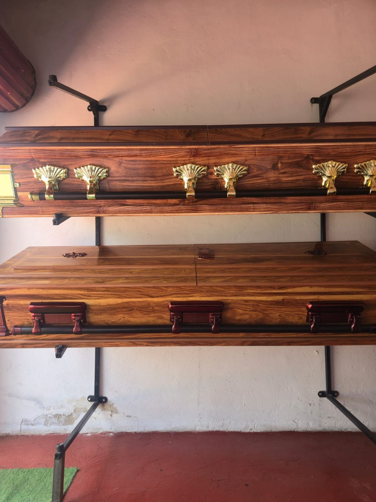

Funeral arrangements
Guidance through the practical details of planning a respectful farewell.
When a loved one passes, the details can feel overwhelming. TSH Funeral Services offers a compassionate point of contact as families navigate arrangements and honour a life remembered.

Every family’s needs and traditions are different. Our approach is to listen carefully, communicate clearly and help you understand the arrangements available to you.
Whether you are planning a service or making an enquiry, you can reach out to TSH Funeral Services for guidance.
Find your nearest office ↗Talk to our team about your circumstances and the options available. We’ll help you understand the next steps.
Guidance through the practical details of planning a respectful farewell.
Discuss available coffin styles and suitable options for your family.
Considerate assistance with key details for a meaningful service.
Ask us about the cover options and membership information currently available.
Specific services, plans, terms and availability should be confirmed directly with TSH Funeral Services.
Images shared by TSH Funeral Services. Each photograph is shown in its natural proportions to preserve the details.




Our supplied information includes funeral cover options. Contact the team to confirm current prices, benefits, eligibility and terms before making a decision.
Ask about available plans ↗Choose the office most convenient for you. Please contact TSH to confirm opening hours before visiting.
For enquiries about funeral arrangements, coffin options or cover information, please contact TSH Funeral Services or visit one of our offices.